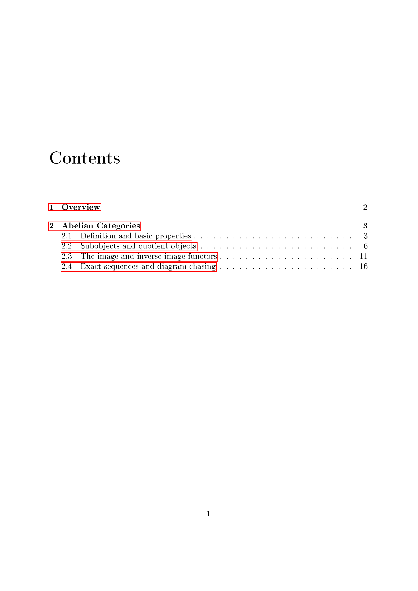
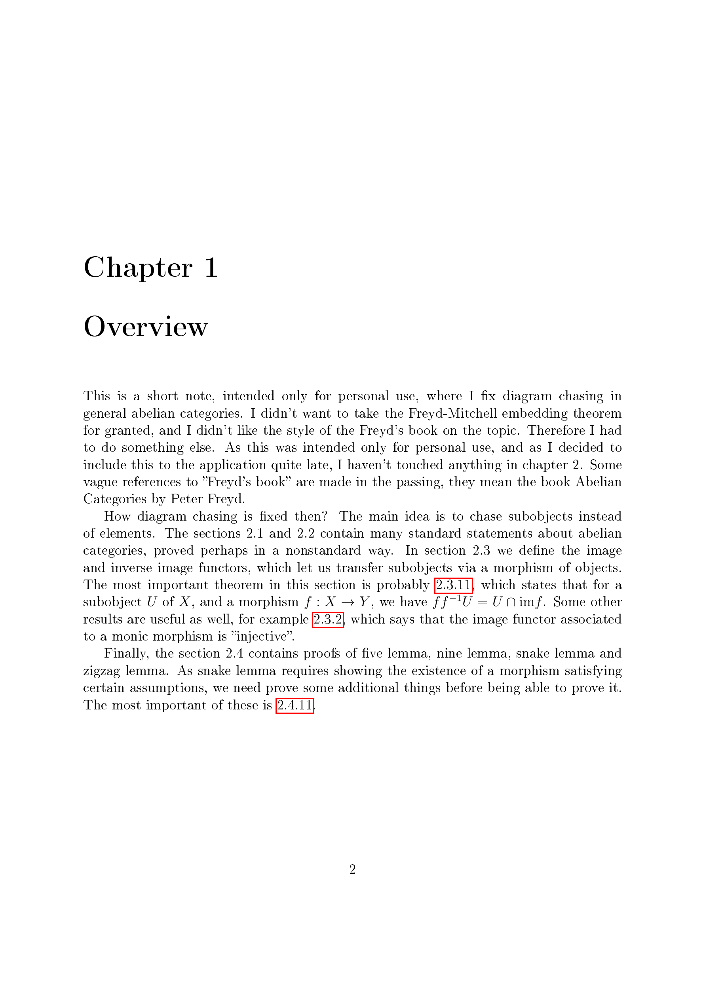
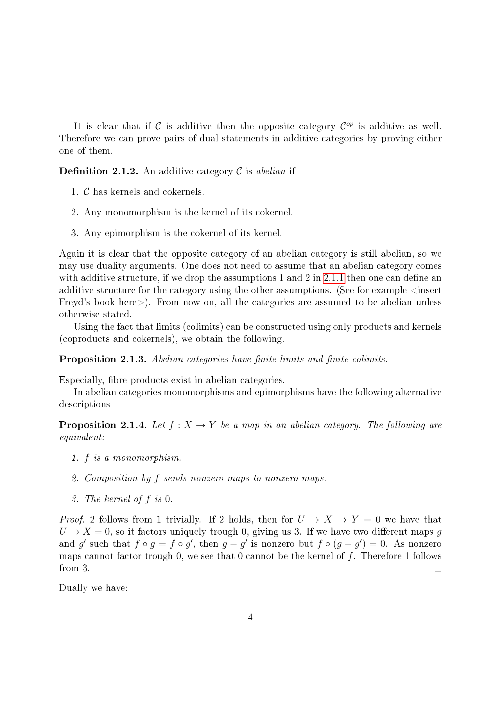
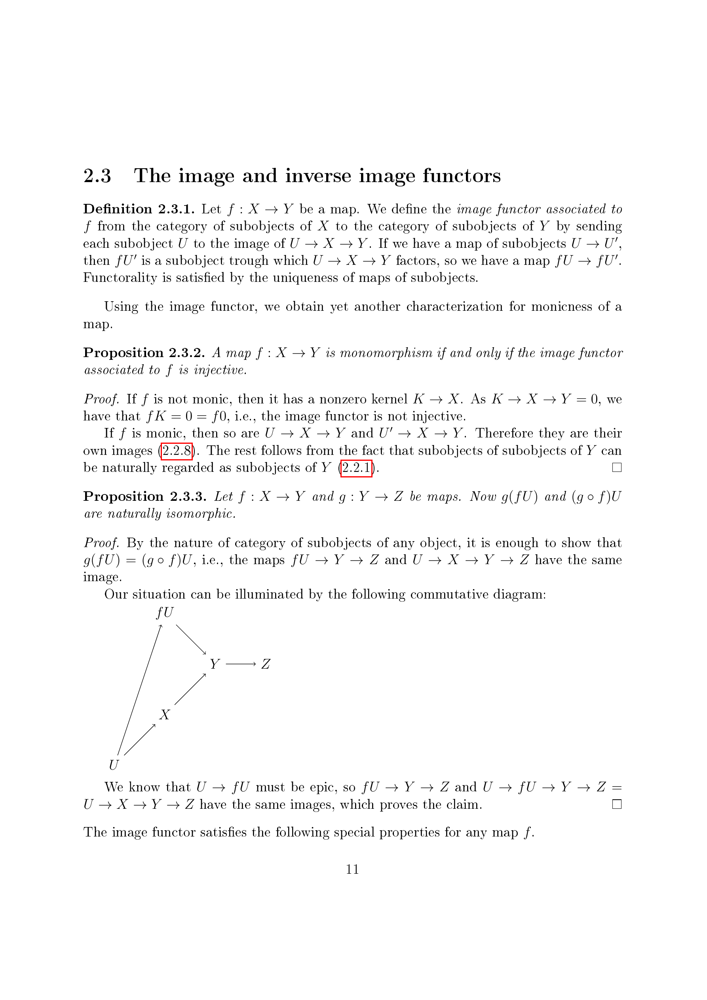
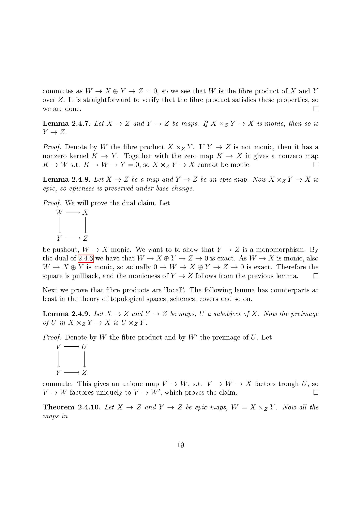
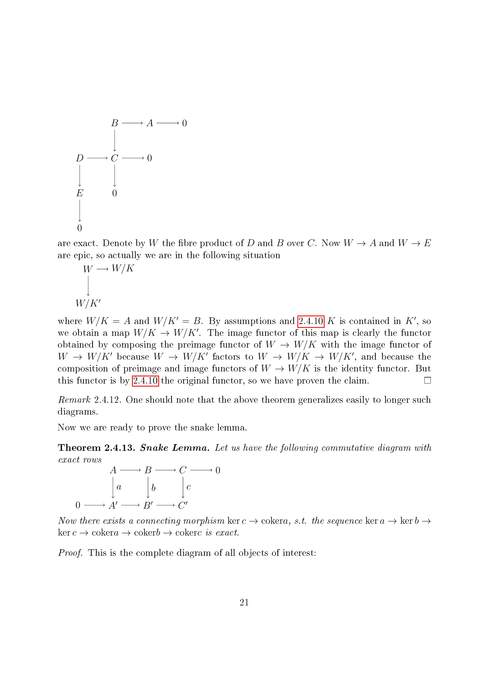
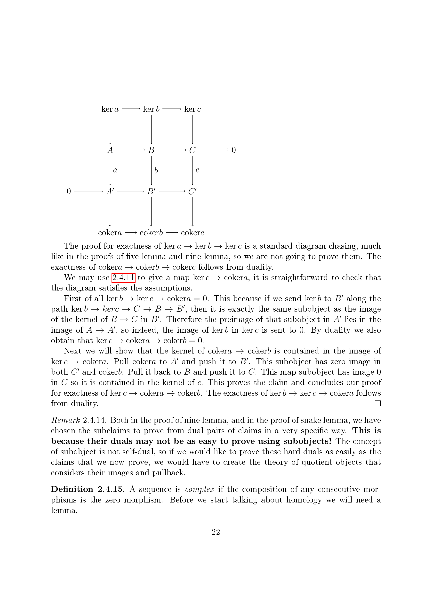

Original pages
All 26 pages of the supplied PDF, in their original order.
Source PDF
Diagram Chasing in Abelian Categories — Toni Annala
Facsimile
PDF page 1
PDF page 2

PDF page 3

PDF page 4
PDF page 5

PDF page 6
PDF page 7
PDF page 8
PDF page 9
PDF page 10
PDF page 11
PDF page 12

PDF page 13
PDF page 14
PDF page 15
PDF page 16
PDF page 17
PDF page 18
PDF page 19
PDF page 20

PDF page 21
PDF page 22

PDF page 23

Comments
Comments are public on GitHub. Load comments to connect to Giscus, or open GitHub Discussions.